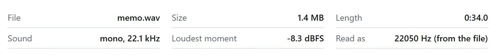
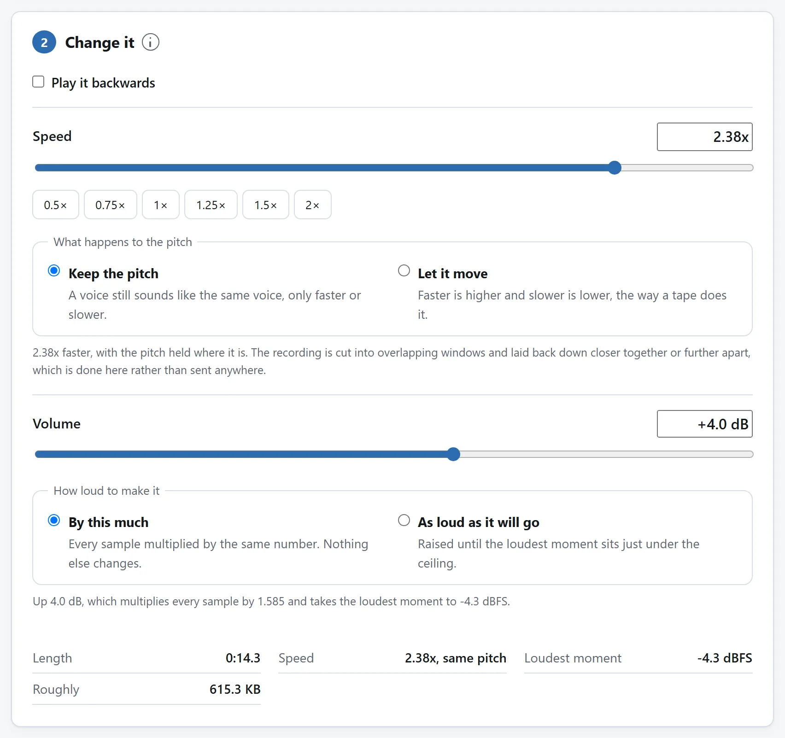

简短的答案
- 剪。打开音频剪辑器，拖入备忘录，边播放边用 I 和 O 标记要保留的部分。波形中的平直区域表示安静的间隙。先听出说错重来的部分和要保留的内容，再用波形定位剪切。导出一个文件。
- 提。把文件放进音频编辑器做归一化，让峰值升到满幅以下，避免削波。导出，再发送这个版本。
两步之间不需要下载：剪辑器一导出，下载按钮下方就有一行提议把结果直接带到编辑器，备忘录到那边已经装好。
两步都在你自己的电脑上跑。语音备忘录差不多是一个文件所能最私人的东西了，而常见的那些“在线修音”网站，都要拿走一份副本，当作那根滑块的价钱。

发给别人，或留一段练习
发给同事的语音或家庭录音，保留完整句子、呼吸和前后少量环境声。剪掉重说的开头，归一化音量，再按正常速度听完整下载 WAV。检查首字、拼接处和结尾；音量更大却切掉辅音，仍是更差的消息。
练外语或排练也能用同一流程。先剪出短段，再在编辑器里选 0.75× 并保持音高，导出前试听难句。作为原说话者发出的版本保留 1× 速度。峰值归一化会整体抬高音量，不能单独把安静的人调到与大声的人一样响。
为什么先剪再提
因为归一化要通读整个文件去找最响的一瞬，而在一段原始备忘录里，最响的一瞬常常正是你要删的那个东西：手机放下时的一声闷响、第二遍开口前的一声咳嗽。先归一化，那个峰值就把天花板定死了，人声进来多小、出去还是多小。先把杂物剪掉，剩下最响的就是人声本身，而余量正该花在它身上。
剪辑器精确剪在采样点上，每个接缝淡入淡出几毫秒，所以哪怕剪在房间嗡嗡声的正中间也不可能发出咔哒声。只有接缝如此：接缝之间没动过的音频是复制过去的，不重新编码。
编辑器修得了什么，修不了什么
归一化修的是太小声。它修不了吵：空调的音量会跟着人声一起升，因为录音只有一条，它们俩一起在里面。让备忘录听得清的，主要还是剪——空白正是噪声独奏的地方——再加上为听的人着想的变速：保持音高的 1.25× 是播客的老手艺，用在一段说着说着跑远了的备忘录上同样灵。
编辑器导出 WAV，不再使用另一种压缩音频格式。默认的 16 位 PCM 会舍入采样值。选择 32 位浮点，可以保留编辑后的浮点值。文件会比压缩原件大，但对几分钟的备忘录来说，可以避免在手机的首次有损编码上再叠一轮。发送前检查聊天服务是否接受 WAV 及其大小。有些服务会重新编码附件，因此把 WAV 留作编辑母版，不要只依赖收到的副本。

同一条链，更长的录音
访谈、讲座、会议：链条不变，只是剪的回报更大。把要紧的问题标出来，其余的放走；标记本身能存成纯文本文件、下次再载入，一场漫长的整理就成了可以放下再拾起的活儿。至于住在视频里的音频，编辑器也能从 MP4 或 MOV 里把音轨抽出来而不碰画面：把一通录下来的电话变成通勤路上能听的东西，这是第一步。
如果你每周都做这件事
剪和提分住在两个页面上是有意为之：每一个只做一件事，每一个都能独自证明录音从没离开过你的电脑。但两个都是开源的：MIT 许可证，每个工具一个文件夹，零依赖的 ES 模块，README 讲清精确到采样点的剪切和 WAV 写出器。
如果备忘录天天朝你砸来，就把代码代理指向代码仓库，让它做出单页版：波形、标记、导出时归一化。这些模块就是写来被读的，把它们带走，正是许可证存在的意义。